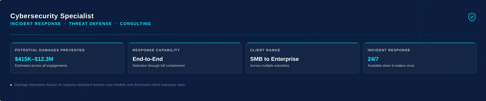

Featured
The Midnight Hack: How I Stopped a Cybersecurity Disaster within Hours
Led real-time response to a critical cyberattack, containing the threat and mitigating business disruption, and restore security and operations within hours — resulting in millions in financial and reputational risk avoidance. Learn MoreHow I Recovered a Failed Production Server and MySQL Database in Under 30 Minutes
Recovered a failed production server and database within 30 minutes, minimizing downtime and restoring full service integrity, followed by delivery of a clear and concise recovery report to stakeholders. Learn More
Projects That Prove My Expertise
1. Advanced Self-Hosting Infrastructure (Docker + Reverse Proxy)
- Problem: Relying on third-party platforms for services like file storage, media streaming, and code hosting often compromises control, privacy, and scalability.
- Solution: I deployed a self-hosted infrastructure running on Docker containers, with applications such as Nextcloud, Jellyfin, Gitea, and Syncthing. I secured the environment with Traefik reverse proxy, WAF, SSL/TLS automation.
- Outcome: This ecosystem provided a scalable, secure, and private platform, enabling complete ownership of data and services while maintaining high availability and performance.
2. Custom OpenWrt Firmware & Router Configuration
- Problem: Off-the-shelf router firmware lacked the features, security controls, and customization required for advanced labs and real-world security use cases.
- Solution: I built and maintained a custom OpenWrt firmware, integrating a captive portal, custom firewall rules, QoS tweaks, logging/monitoring hooks, and secure update mechanisms.
- Outcome: The firmware turned consumer-grade routers into secure, policy-driven networking appliances, reducing attack surface and enabling advanced features such as guest isolation, SIEM-ready telemetry, and improved performance.
3. WordPress E-Commerce Website (Client Project)
- Problem: A client needed a fast, secure, and reliable e-commerce platform to support growing online sales, but off-the-shelf hosting solutions were slow and insecure.
- Solution: I designed and deployed a custom WooCommerce site on a manually optimized LAMP stack, integrating Memcached for server-side caching, client-side caching plugins, SSL/TLS with auto-renewal, MFA, firewall rules, and backup systems. I also handled Cloudflare DNS management, SEO optimization, and integrated multi-payment gateways (Bkash, Nagad, Rocket, cards, and bank transactions).
- Outcome: The result was a high-performance, secure e-commerce website that improved customer experience, boosted sales, and gave the client a scalable foundation for future growth.
4. Security Information & Event Management (SIEM) with Wazuh & ELK
- Problem: Modern infrastructures generate massive amounts of logs, but without centralized monitoring, threats can go unnoticed until damage is done.
- Solution: I architected and deployed a SIEM solution using Wazuh, ELK Stack, and ElasticSearch, integrating log collection, real-time alerting, and visualization dashboards.
- Outcome: This setup enabled proactive threat detection and streamlined incident response, ensuring improved visibility across systems and reducing mean time to detection (MTTD).
5. Intrusion Detection & Prevention System (Snort & Suricata)
- Problem: Unmonitored network traffic leaves systems vulnerable to undetected intrusions and malicious activity.
- Solution: I implemented and tuned Snort and Suricata IDS/IPS systems, building rulesets to detect and block suspicious traffic patterns. The deployment was tested in both lab and production-like environments.
- Outcome: These defenses provided early warning against network-based threats, successfully reducing the attack surface and enhancing overall network security posture.
6. Exploit Development & Game Hacking (Research)
- Problem: Understanding software vulnerabilities at a deep level requires working hands-on with low-level systems, memory, and reverse engineering challenges.
- Solution: I conducted exploit development and game hacking research projects, writing proof-of-concept exploits, reverse engineering binaries, and creating mods and automation scripts for games.
- Outcome: These projects sharpened my skills in reverse engineering, secure coding practices, and vulnerability research, which directly improve my ability to identify and mitigate real-world software security flaws.
7. Telegram Battery Status Bot
- Problem: Users often forget to monitor battery health and charging status on their devices, which can shorten battery lifespan or lead to sudden shutdowns.
- Solution: I built a lightweight Telegram bot that monitors battery status and sends real-time alerts, providing insights into charging health and thresholds.
- Outcome: This bot automated a simple but valuable use case, demonstrating practical automation with Python scripting, API integration, and lightweight notifications that improve user convenience.
8. AI Music Remover (In Progress)
- Problem: Video editors and content creators often struggle with separating vocals from instrumentals in audio tracks for remixing, karaoke, or background scoring.
- Solution: I’m developing an AI-powered tool that leverages advanced machine learning models to isolate vocals and instruments with high accuracy. The project involves training and fine-tuning separation models and integrating them into a user-friendly interface.
- Outcome: Once completed, this tool will enable creators to work more flexibly with audio, reducing reliance on expensive proprietary software while showcasing my expertise in machine learning, signal processing, and AI application development.
Real-World Impact & Professional Experience
Cyber Security & Software Development Specialist [2017 - Present]
Delivered a wide range of independent cybersecurity, IT infrastructure, and software development projects, blending technical depth with hands-on problem solving.
Key Highlights:
-
System & Network Security: Deployed enterprise-grade security with WAF, IDS/IPS (Snort, Suricata), SIEM (Wazuh), ELK Stack, and ElasticSearch and IAM for monitoring, access control, intrusion detection, and log analysis.
-
Home Lab & Self-Hosting: Designed and maintained secure, self-hosted services including Git (Gitea), cloud storage (Nextcloud), media streaming (Jellyfin), bookmark management (Linkding), backup/sync (Syncthing), and network-wide ad blocking (Pi-hole). Hardened servers, configured reverse proxy & WAF with Traefik, and containerized workloads with Docker for efficiency and scalability.
-
Digital Forensics & Data Recovery: Performed investigations, analysis, and recovery for real-world and lab projects to strengthen understanding of data integrity and system security.
-
Exploit Development & Reverse Engineering: Reverse engineered softwares and games and developed exploits and mods in lab environment as security research.
-
Development & Automation: Built practical tools and utilities such as a Telegram battery status bot, an automated meeting attendance bot, a Windows optimization utility, a Markdown-to-HTML converter, a torrent tracker updater, and an ongoing AI-based music remover.
-
Performance & Reliability: Enhanced infrastructure with server hardening, SSL/TLS encryption with auto-renewal, caching strategies, and backup systems, ensuring secure and resilient environments.
Impact: Consistently delivered optimized, secure, and high-performance systems while strengthening expertise across cybersecurity, IT operations, and software development. Achievements: self-hosted systems, automation, SIEM, IDS/IPS, OpenWrt firmware
Cybersecurity Incident Response Consultant [2023]
-
Led real-time response to a critical cyberattack, containing the threat and restoring full operations within hours.
-
Successfully mitigated business disruption, preventing millions in financial and reputational risk.
-
Coordinated containment, remediation, root cause analysis, and post-incident hardening to strengthen resilience.
Achievement: Potentially millions of dollars risk avoidance in real-world incident
Wordpress Developer @ Al Aqsa Food [2024]
- Designed, developed, and deployed a full-featured e-commerce WordPress website with WooCommerce, tailored to client business needs.
- Built and optimized a custom deployment environment by manually configuring a LAMP stack, improving website speed, performance, and scalability.
- Implemented multi-layer caching strategies:
- Server-side caching
- Distributed object caching with Memcached
- Client-side optimization with caching plugins
- Secured the platform with firewall configuration, MFA, SSL/TLS with auto-renewal, and backup system integration to ensure resilience and data protection.
- Integrated payment gateways (bKash, Nagad, Rocket, cards, and bank transactions) for seamless online transactions.
- Configured Cloudflare DNS management for optimized global performance and added protection.
- Enhanced SEO optimization to drive organic traffic and improve search rankings.
- Deployed Facebook Pixel for targeted advertising and tracking, increasing client’s marketing ROI.
- Project outcome: Improved website performance, increased sales, and strengthened client’s online engagement.
Achievement: High-performance, secure e-commerce deployment
Founder and CEO @ Vault47 [2024 - Present]
- Established a Cyber Security company in Bangladesh to secure businesses and organizations.
- Conducted business proposal campaigns and created new connections.
- Conducted content marketing campaign.
- Created business portfolio website and necessary documents.
Software Engineer @ Devs Core [2021 - Present]
- Developed custom OpenWRT firmware for routers with captive portal.
- Helped the company more than 2x in valuation and raise huge investments with our projects.
- Conducted Cyber Security audit and created well documented audit report.
- Recovered production server from failure within half an hour, performed database recovery and briefed recovery report.
- Helped the team with Linux and Windows System Administration.
- Got “Enthusiastic Developer of the Year” Award and Certificate of Appreciation for outstanding performance.
- Solved various software design problems and helped the team with building robust softwares.
- Guide the team on the Open Source Software journey.
- Provided the team with answers to various deep software development related questions.
- Got huge experience with Bug Fixing.
SEO Expert @ Devs Core [2021 - 2024]
- Got websites to #1 ranking on Google’s first page within a week.
- Conducted on-page and off-page seo.
- Helped with Wordpress website development and creative content writing.
- Conducted SEO training for the content writing team to help them write better SEO friendly content.
- Helped the digital marketing team with research and analysis for content marketing.
Achievements, Certifications & Recognition
- Potential millions of dollars risk avoidance in real-world incident.
- TryHacMe Advent of Cyber 2022.
- Ethical Hacking for Beginners by David Bombal.
- IEEE Cyber Security Workshop.
- Certification of appreciation from Devs Core.
- Enthusiastic Developer of The Year Award from Devs Core
- Money Management certification by Mohaimin Patwary.
- Professional Selling Skills certification by Yousuf Efti.
- Islamic Science Study at Zad Academy.
- Book Reading programme by British Council.
- Certification of appreciation for Science Fair project.
- Certificate of participation at Science Olympiad.
Expertise
Cyber Security
- Vulnerability Assessment & Penetration Testing (VAPT)
- Linux Administration & Security Hardening
- Identity & Access Management (IAM)
- Exploit Development & Reverse Engineering
- Web Application Security & WAF Management
- SIEM (Wazuh) & ELK Stack (ElasticSearch)
- Digital Forensics & Incident Response (DFIR)
- Endpoint Detection & Response (EDR)
- IDS/IPS (Snort, Suricata)
- Firewall Configuration & Network Security
- Custom Firmware Configuration (OpenWRT)
Programming & Automation
- Python, C, C++, C# Programming
- Bash, PowerShell & Batch Scripting
- Java, Golang, PHP, HTML, CSS & JavaScript
- Custom Firmware Development (OpenWrt with Captive Portal)
- Automation Scripting & Custom Tool Development
Web / DevOps
- WordPress, WooCommerce, LAMP Stack
- Reverse Proxy & WAF with Traefik
- Server Administration & IT Infrastructure Management
- Virtualization & Containerization (Docker)
- Git & Self-Hosted Git Platforms (Gitea)
- Self-Hosting Solutions: Nextcloud, Syncthing, Jellyfin, Linkding, Pi-hole
- DNS Management, Cloudflare & SSL/TLS Automation
- Payment Gateway Integration (MFS / Card / Bank)
Personal Strengths
- Documentation Writing & Technical Reporting
- Deep Research, Fast Learning & Problem-Solving
- Teamwork, Collaboration & Communication
- Great Listener and Motivator
- Coffee Lover
Secure Your Systems – Let’s Work Together
I help companies build secure, resilient digital systems. Reach out to discuss your security challenges or software needs.
WhatsApp/Phone: +880 1623-752429
Email: saifbinshahab@proton.me
Copy Code